Данная программа предназначена для управления общежитием и позволяет хранить и редактировать данные об общежитии и проживающих лицах. Также она позволяет неавторизированным пользователям получить доступ такой информации, как количество свободных мест, а также дает возможность отправить заявку на заселение.
Программа поддерживает работу в двух режимах: режиме гостя и режиме коменданта.
Для входа в программу в режиме гостя необходимо нажать кнопку "Войти как гость" на форме авторизации. При этом ее не требуется заполнять.
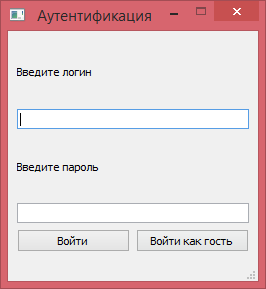В главном окне в режиме гостя имеется следующая информация:
Также имеется кнопка, позволяющая написать заявку на заселение.
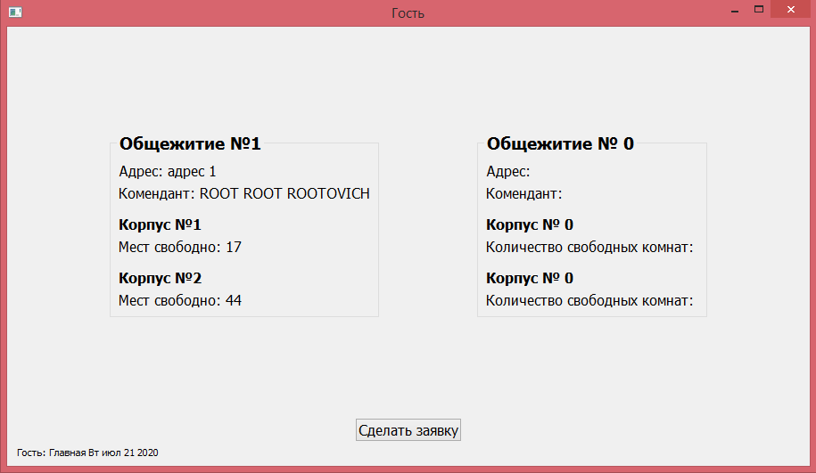Для входа в режим коменданта необходимо заполнить форму регистрации своим логином и паролем и нажать кнопку "Войти". В случае удачной аутентификации комендант увидит следующее окно:
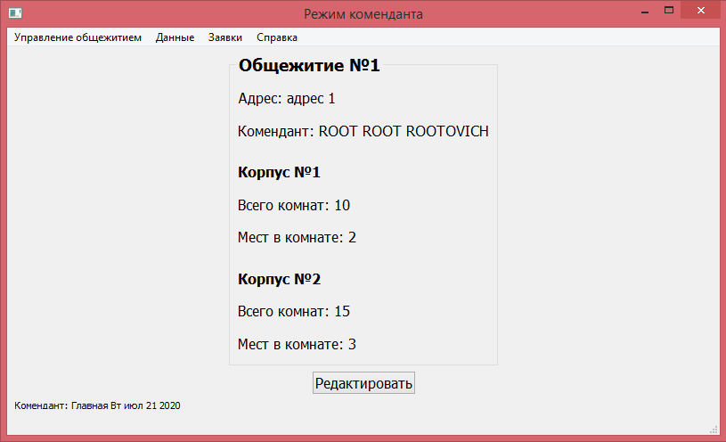Данное окно содержит следующую информацию:
Также данное окно имеет кнопку для редактирования информации об общежитиях и навигационное меню.
Для написания заявки на заселение необходимо зайти в режиме гостя и нажать на кнопку "Сделать заявку". После этого откроется следующее окно:
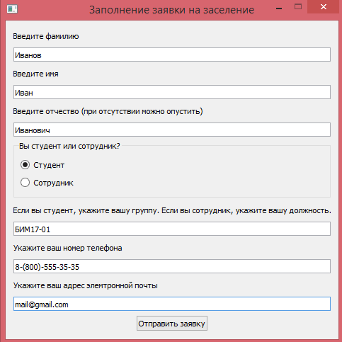Все поля кроме отчества обязательны для заполнения. После заполнения полей необходимо нажать кнопку "Отправить заявку".
Для добавления информации о заселенных лицах необходимо выбрать опцию меню "Управление общежитием" и там выбрать пункт "Добавление информации о заселенных лицах". После этого откроется следующее окно:
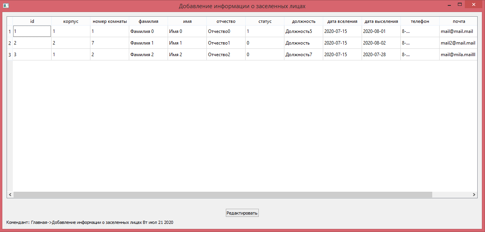В таблице имеются данные обо всех проживающих в общежитии лицах. Для редактирования данных необходимо выбрать человека кликом мыши и нажать кнопку "Редактировать". После нажатия на кнопку откроется следующее окно:
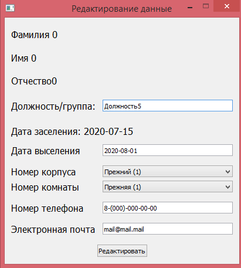В окне прописаны данные выбранного человека. В редактировании необходимо учитывать несколько правил:
Для принятия изменения нужно нажать кнопку "Редактировать". При этом все поля должны быть заполнены.
Для изменения информации о выселенных лицах необходимо выбрать опцию меню "Управление общежитием" и там выбрать пункт "Изменение информации о выселенных лицах". После этого откроется следующее окно:
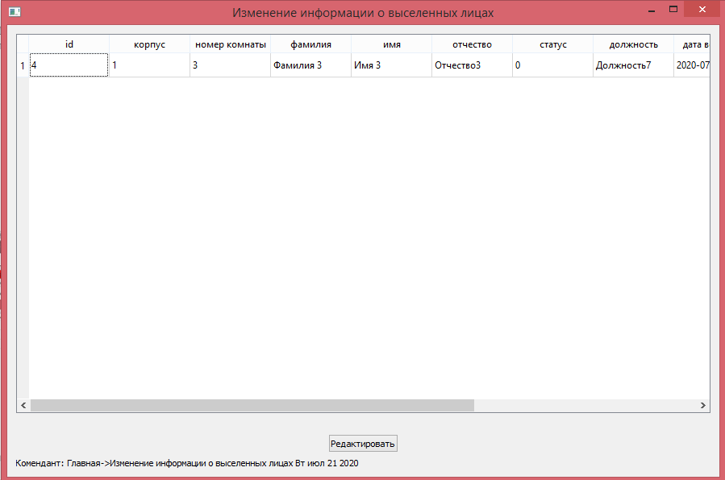В таблице имеются данные обо всех лицах, чья дата выселения меньше текущей. Для редактирования данных необходимо выбрать человека кликом мыши и нажать кнопку "Редактировать". После нажатия на кнопку откроется следующее окно:
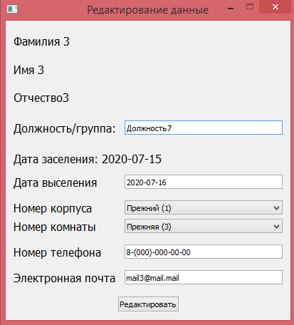В окне прописаны данные выбранного человека. В редактировании необходимо учитывать несколько правил:
Для принятия изменения нужно нажать кнопку "Редактировать". При этом все поля должны быть заполнены.
Для доступа к списку свободных мест необходимо выбрать пункт меню "Данные", и в нем выбрать "Получение списка свободных мест". После этого откроется следующее окно:
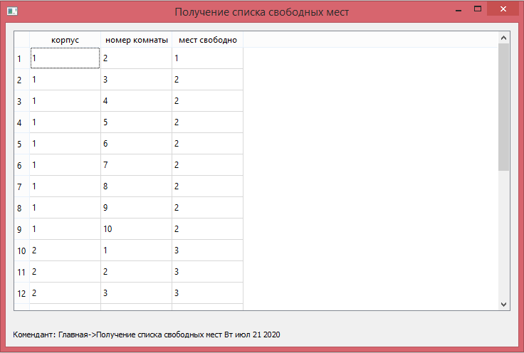Редактировать данные здесь нельзя.
Для доступа к списку свободных комнат необходимо выбрать пункт меню "Данные", и в нем выбрать "Получение списка свободных комнат". После этого откроется следующее окно:
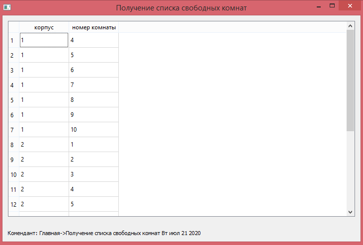Редактировать данные здесь нельзя.
Для доступа к комнате по определенному жильцу необходимо выбрать пункт меню "Данные", и в нем выбрать "Получение информации о комнате по жильцу". После этого откроется следующее окно:
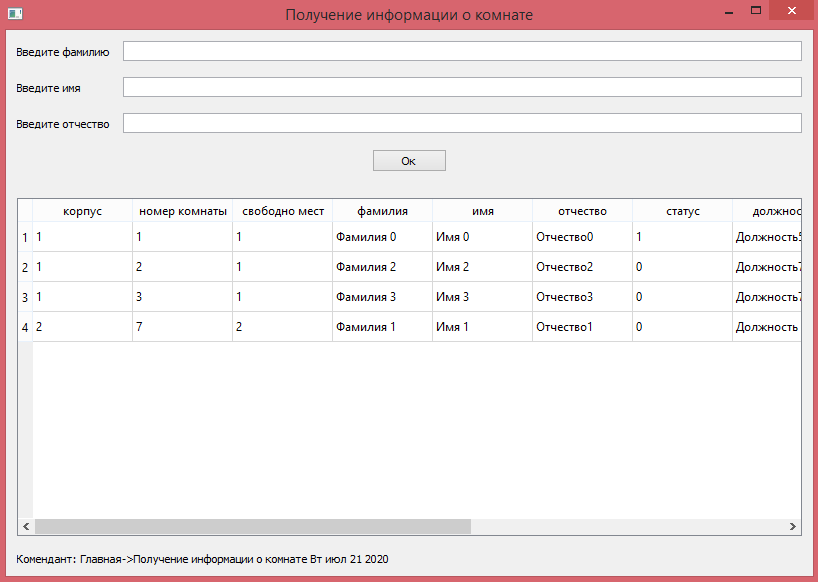Для получения данных необходимо нажать кнопку "Ok". В случае, если ни одно поле не заполнено, в таблицу будут выведены данные обо всех жильцах. Для уточнения можно указать фамилию, имя или отчество, и поиск будет проходить по вписанным данным.
Редактировать данные здесь нельзя.
Для доступа к списку проживающих необходимо выбрать пункт меню "Данные", и в нем выбрать "Получение списка проживающих". После этого откроется следующее окно:
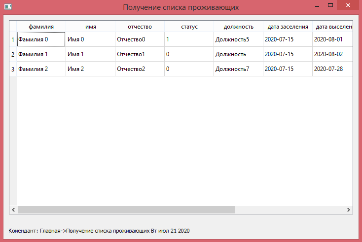Редактировать данные здесь нельзя.
Для доступа к списку заявок необходимо выбрать пункт меню "Заявки", и в нем выбрать "Получение списка заявок". После этого откроется следующее окно:
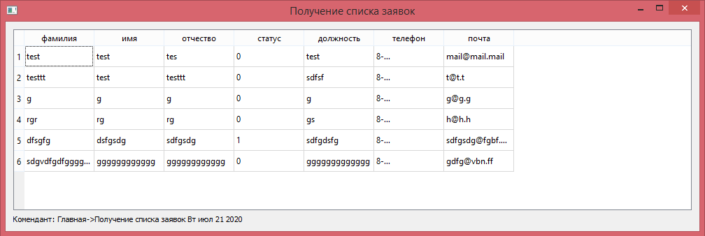Редактировать данные здесь нельзя.
Для редактирования информации об общежитии необходимо на главном окне нажать кнопку "Редактировать". После этого откроется окно редактирования:
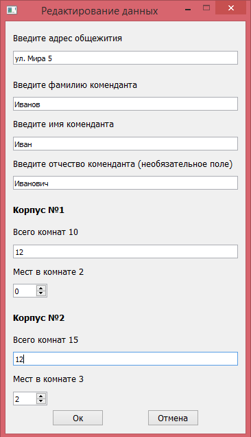Все поля кроме отчества обязательны для заполнения. В информации о корпусах указаны текущие данные о количестве комнат и количестве мест в комнате.
Для принятия изменений необходимо нажать кнопку "Ок". В случае непринятия изменений необходимо нажать кнопку "Отмена".
На этом справка оканчивается. Приятного пользования!